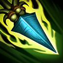

起手裝備
 增幅典籍
增幅典籍
保留巫妖→無限寶珠→死亡之帽，只推薦給能以人形控距、命中標記後安全打出豹形普攻的熟練玩家；這是手機版技能互動推導的條件方案，不宣稱當版巴龍路主流。逆風或無安全進場空間時提前中婭。


五件成裝與鞋子分開列示；起手與核心是購買路線，不是額外佔用的成裝欄位。鞋子完成時機仍依對線壓力與回城金錢調整。


電刑維持短爆發，副系致命一擊改骨甲以承受對線突進；不移植打野收割或清野符文。


奈德麗：閃現調整進退，點燃補短換血收尾與重創；沒有擊殺窗口時不要為點燃強行離開兵線。
加點優先：Q > E > W
維持 Q>E>W，先升標槍／擊倒，再升治療／揮擊；換形不等於獲得安全進場機會，標槍命中仍要先看兵線及敵方控制。
在草叢中提高跑速；人形標槍或陷阱命中會施加獵捕，揭露目標並提高追擊跑速，同時強化美洲獅形態的擊倒與猛撲。 7.2b 標記敵軍時的額外跑速調整為 10%。

人形投擲標槍，飛行距離越遠傷害越高；美洲獅形態強化下一次普攻，目標生命越低傷害越高。
人形放置會揭露並標記目標的陷阱；美洲獅形態向前跳躍造成範圍傷害，對獵捕目標距離更遠。
人形治療友軍並提高其攻速；美洲獅形態向前方揮擊造成範圍魔法傷害。
在獵人與美洲獅形態間切換；美洲獅形態會獲得額外雙防並使用另一組近戰技能。
標槍／陷阱命中才有獵捕追擊收益，豹跳進場前仍需確認敵方控制與小兵阻擋。
人形1技長矛 → 切換豹形 → 豹形2技猛撲 → 豹形3技揮擊 → 豹形1技擊倒
長距離長矛標記獵物後切豹形跳入，最後以擊倒依低生命造成高額傷害。
人形2技陷阱 → 人形1技 → 切換豹形 → 豹形2技 → 豹形1技
陷阱先提供標記與視野，再用長矛壓低生命並切豹形收尾。
人形3技治療 → 普攻 → 人形1技 → 人形2技
利用治療和攻速維持線權，以長矛與陷阱消耗，不必每次命中都強行跳入。
人形以普攻補兵和標槍控距，陷阱看守河道與草叢；標記命中後先看敵方突進與兵線，再決定是否切豹形。此頁是單人線，不採打野入侵節奏。
巫妖之禍→無限寶珠→死亡之帽為熟練者的標記接普攻爆發方案；沒有安全豹跳窗口就先遠程消耗，不以打野指南的強勢期推定單線優勢。
後期避免正面豹跳入五人，先用遠程消耗，殘血目標出現再進場收割。
伊瑞莉雅借兵突進、雷尼克頓近身暈眩都會懲罰空槍，留豹跳作撤退。
對局名單是機制與分路判斷，不代表固定勝率；需同時看雙方熟練度、兵線與陣容。
保留原巴龍路 B，但此項仍待確認：本次能核對的7.3b指南是打野，沒有可驗證的巴龍路樣本。遠程消耗與豹形收尾能運作，不足以證明她在單線的相對排名；不拿打野 S 改寫。
保留巫妖→無限寶珠→死亡之帽，只推薦給能以人形控距、命中標記後安全打出豹形普攻的熟練玩家；這是手機版技能互動推導的條件方案，不宣稱當版巴龍路主流。逆風或無安全進場空間時提前中婭。
對局名單是技能與換血條件的提示，不是7.3b勝率排名。先看敵方突進、關鍵防禦技能與兵線；裝備成形後重新評估，不能把前期有利當整場必勝。
以下情境替換以本頁7.3b五件成裝為基準。同一格多項建議擇一；鞋子由二級升三級，主動裝另占成裝格。
高
觸發：需要更高魔法穿透時，替換原百分比穿透裝，不同時堆死墓與虛空。
目前配置已提供部分魔防多所需功能；先按威脅調整購買順序，不為分類名稱強行多買一件。
主動裝占成裝格；鞋子更換時整條升級路線一起更換。
高
觸發：主動無敵幫助等待隊友及第二輪技能，使用時機需配合敵方爆發。
目前配置已提供部分被突進爆發所需功能；先按威脅調整購買順序，不為分類名稱強行多買一件。
主動裝占成裝格；鞋子更換時整條升級路線一起更換。
高
觸發：先遺忘寶珠過渡，必要時替換末件；重創不因多人裝備而相加。
中婭沙漏 → 黑魔禁書
敵方治療持續影響擊殺時先補遺忘寶珠，確實需要完整重創裝且無致命爆發威脅，才以黑魔禁書取代中婭。若中婭是必要保命裝，保留中婭並重新取捨傷害格，不同情境不可直接同時套用。
敵方治療持續影響擊殺時先補遺忘寶珠，確實需要完整重創裝且無致命爆發威脅，才以黑魔禁書取代中婭。若中婭是必要保命裝，保留中婭並重新取捨傷害格，不同情境不可直接同時套用。
主動裝占成裝格；鞋子更換時整條升級路線一起更換。
高
觸發：護盾持續妨礙集火時，以破盾功能替換末件，不把護盾誤當治療。
中婭沙漏 → 水仙三叉戟
敵方護盾持續阻止集火，且沒有必須依靠中婭躲避的爆發時，才以水仙三叉戟取代中婭。若中婭是必要保命裝，保留中婭並重新取捨傷害格，不同情境不可直接同時套用。
敵方護盾持續阻止集火，且沒有必須依靠中婭躲避的爆發時，才以水仙三叉戟取代中婭。若中婭是必要保命裝，保留中婭並重新取捨傷害格，不同情境不可直接同時套用。
主動裝占成裝格；鞋子更換時整條升級路線一起更換。
高
觸發：二級鞋改水星之靴，三級鞋對應鎖鏈軍靴；韌性不縮短擊飛。
魔力之靴 → 水星之靴
魔法傷害及可縮短的控制占主導時，整條改水星之靴→鎖鏈軍靴；韌性不能縮短擊飛。
魔法傷害及可縮短的控制占主導時，整條改水星之靴→鎖鏈軍靴；韌性不能縮短擊飛。
主動裝占成裝格；鞋子更換時整條升級路線一起更換。
本頁校正版本：7.3b；校正日期：2026-10-15。
參考來源標示版本：7.3b（共通機制；無同版巴龍路評級）
Tier、出裝、符文與對局是本站編輯建議，不是官方推薦或已驗證台服勝率。v118延續同日v117的逐路複核，針對來源缺口及數值衝突再核對；未宣稱所有技能已在手機內逐級實測。
評級理由：保留原巴龍路 B，但此項仍待確認：本次能核對的7.3b指南是打野，沒有可驗證的巴龍路樣本。遠程消耗與豹形收尾能運作，不足以證明她在單線的相對排名；不拿打野 S 改寫。
WildRiftFire 參考攻略 ↗ · WildRiftFire 參考攻略 ↗ · Riot 官方資料 ↗
保留原巴龍路 B，但此項仍待確認：本次能核對的7.3b指南是打野，沒有可驗證的巴龍路樣本。遠程消耗與豹形收尾能運作，不足以證明她在單線的相對排名；不拿打野 S 改寫。
保留巫妖→無限寶珠→死亡之帽，只推薦給能以人形控距、命中標記後安全打出豹形普攻的熟練玩家；這是手機版技能互動推導的條件方案，不宣稱當版巴龍路主流。逆風或無安全進場空間時提前中婭。
本次搜尋可取得的是7.3b打野指南；只用於手機版共通技能及裝備互動，未發現足夠的同版本巴龍路評級依據。
維持 Q>E>W，先升標槍／擊倒，再升治療／揮擊；換形不等於獲得安全進場機會，標槍命中仍要先看兵線及敵方控制。